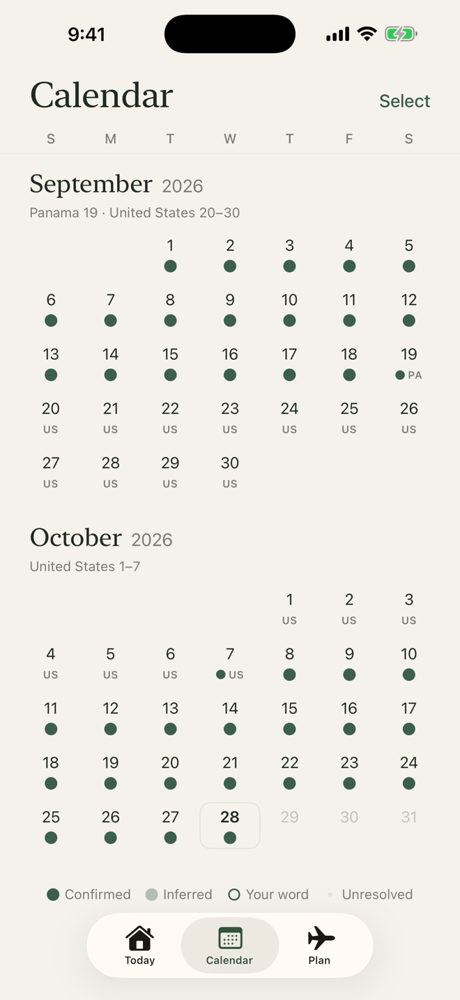
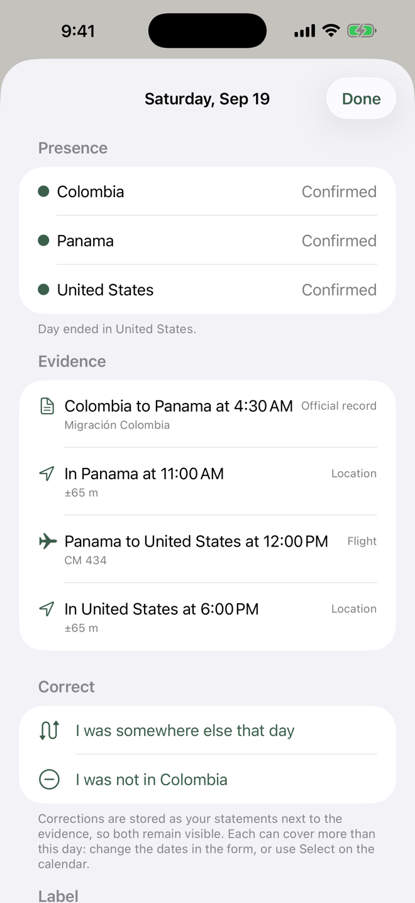
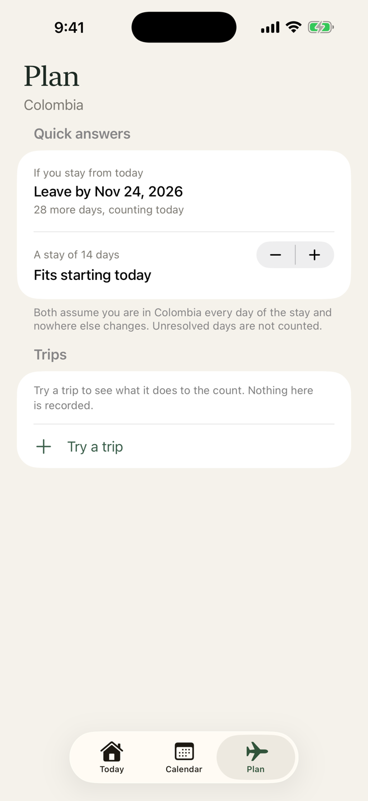
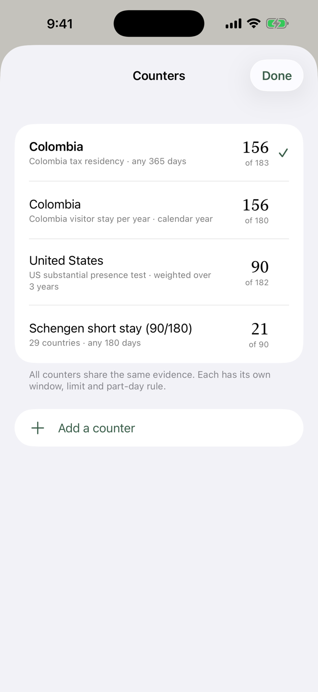

Built for the limits that catch people out
38 built-in rules, each linked to its official source: Colombia, the US and ten states, the UK, Schengen, Canada, Mexico, Spain, Portugal, Brazil, Peru, Ecuador, Panama, Costa Rica and the Dominican Republic. You can also build your own.
Free calculators, no download needed: Schengen 90/180 · Colombia tax residency · US substantial presence test
See it in one minute
How to set it up, add your past and read your number, in under a minute. It has sound.
One number, honest about what it doesn't know
Every day is marked confirmed, inferred or your word, so you can see how solid the count is. Days the app can't place stay unresolved, and the range shows how high the number could go if you were there.
Every trip on one calendar
With Always location access, Olyvra notices when you arrive in a new country, even while it sits in the background. It uses the low-power signal iOS sends when you move, not continuous GPS.

Your past travel, with proof for every day
No need to type in years of travel. Import boarding passes, flight histories, official entry and exit records, photos, Google Timeline, calendar events and workout routes. Olyvra rebuilds what it can and shows you what's missing. Every day shows its evidence, and you can correct any day or range.

Plan before you book
See the date you would have to leave by, try a trip before you book it, and get warned before you reach a limit.

All your rules, side by side
A tax rule and a visa limit rarely count the same way. Keep several counters on the same evidence, each with its own window, limit and way of counting part days.

Your travel history stays yours
An app that knows where you have been should not need to tell anyone else.
- No account needed to use it.
- No analytics, no advertising, no tracking.
- Your records stay on your iPhone, with an encrypted backup in your iCloud Drive when it's on.
- An optional online backup is locked with a recovery code only you hold.
One price. No subscription.
Everything is free for 30 days. After that, one purchase unlocks the full app for good: $9.99 in the US, with local prices elsewhere.
Always free
- Your count and every day recorded
- Adding and correcting stays
- Importing your records
- Exports, reports and backups
The unlock adds
- Automatic logging, in the background
- Opening any day to see its evidence
- Resolving unresolved days with one tap
- The planner and its quick answers
Questions
Is this legal or tax advice?
No. Olyvra counts days. It doesn't decide your tax residency or immigration status, which depend on rules and facts the app can't see. Check anything important with the authority or a qualified professional.
Will it drain my battery?
It doesn't run continuous GPS. It relies on the low-power location signal iOS already sends when you move a significant distance.
What if I swipe the app away?
iOS stops waking an app you swiped away, so detection goes quiet until you open it again. If Olyvra hears nothing for a while, it sends a notification asking whether you are still in the same country, so turn notifications on. Otherwise, just leave it in the background.
Can it count trips from before I installed it?
Yes, from what you can show: boarding passes, flight logs, official records, photos and more. Days it can't place stay marked as unresolved until you settle them.
What happens if I delete the app or change phones?
With iCloud Drive on, or with the online backup, a new install can bring your records back. Without either, your backup stays on the iPhone and is deleted with the app, so save a copy from Settings, then Export.
What happens if I don't buy after 30 days?
Nothing is charged: the trial never asks for payment details. Automatic logging pauses and a few screens lock, but your count, every day you recorded, adding days by hand, exports and backups stay free. With notifications on, the app reminds you three days before.
Do I need an account?
No. An account exists only for the optional online backup, using Sign in with Apple, and you can delete it in the app at any time.
Is it on Android?
Not at the moment. Olyvra is for iPhone.
Something else? See Support.